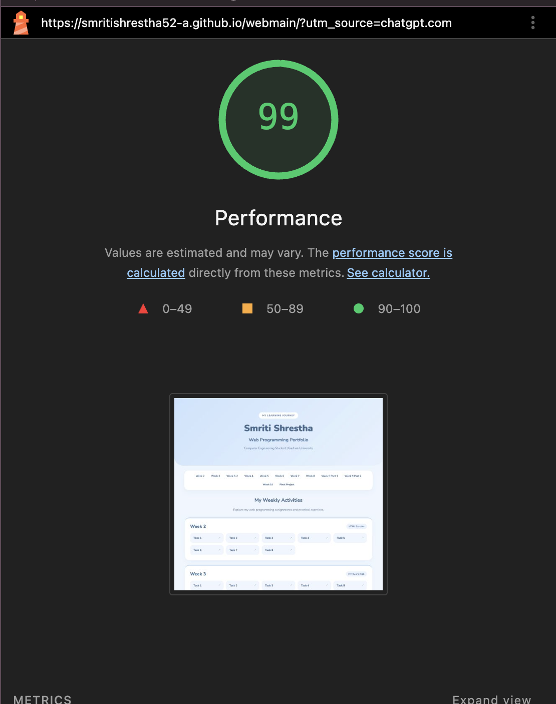

Exercise 3: Lighthouse Performance Audit
Week 9 Part 2 | Web Programming
Website: Smriti Shrestha Web Programming Portfolio
1. Introduction
In this exercise, I tested my published GitHub Pages portfolio using Google Lighthouse. I examined the Performance score and loading metrics to understand how efficiently my website loads.
2. Lighthouse Performance Score
99 / 100 - Excellent Performance
The Lighthouse audit gave my website a performance score of 99, which is in the green range.

Figure 1. Actual Lighthouse performance score.
3. Performance Metrics
The results show that the page displayed its content quickly. The Total Blocking Time was zero, and the Cumulative Layout Shift was also zero.

Figure 2. Actual Lighthouse metrics and insights.
4. Issues Identified
Although the website received a high performance score, Lighthouse identified some areas that could still be improved:
- Render-blocking requests: Estimated savings of 340 ms.
- Network dependency tree: The loading dependencies can be examined for possible improvements.
- Optimize DOM size: The HTML document structure can be reviewed and simplified if necessary.
5. Conclusion
After testing my portfolio with Google Lighthouse, I received a performance score of 99 out of 100. The loading metrics were also very good, with FCP and LCP at 0.8 seconds and zero Total Blocking Time.
This exercise helped me understand how to measure website performance, read Lighthouse reports, identify loading issues, and find opportunities to improve website optimization.